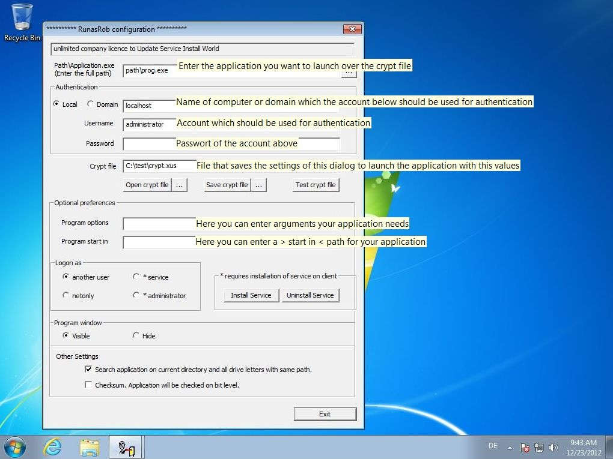

RunAsRob run as another user
RunAsRob run as another user
Run as different user start an application with other credentials
To run application as different user from the current logged on user in Windows, the login credentials are read from an encrypted file.
Delegate particular administrative tasks to limited users, by send them an encrypted file, in which the program for this job is authorized.
By this way, you can also distribute software by providing an encrypted file, in which the path to the setup.exe and credentials of an administrator account are stored, to start the installation as administrator.
With run as different user of RunAsRob, you can substitute a colleague by running the according program with his login credentials from an encrypted file.
If you must work under an administrator account, you can run specific software or an internet browser with limited rights, to minimize the security risk.
As administrator you can easy test and verify software, if it is running with standard user privileges, without logout and login procedure.

Path\Application.exe:
This field shows the path of the application in the encrypted file which can run over Runas Rob. Here you can change, select or enter the full path of your application.
Authentication:
Credentials of the administrator who is written in the encrypted file to start the application over this authentication.
Crypt file:
Path of the encrypted file that saved the information from this configuration window
With the crypt file buttons you can open, save or test an open encrypted file.
You must save your changes over the >> save crypt file << button before you can test it.
Program options:
On this field you can input arguments or options your application require.
Start in:
Directory where your application should executed.
Logon as:
- another user >> application run under the authentication in the encrypted file.
- netonly >> application use logon credentials only for remote connections.
- *service >> application start with system rights and elevated privilegs under the local system account and bypass the UAC Dialog.
-
*administrator >> current logged on user will login as a member of the local group administrators for the autorized application.
By this option the own profile and environment of the current user is used. Therefore the user have to input his own credentials to launch the allowed application as a member of the local administrator group.
* The last two options require an installation of the service from RunasRob. You can do this over the Install Button or a call of RunasRob with option /install like >> runasrob.exe /install <<
Program window:
Set it visible to show the application for interacting with the user.
Set the option Hide to launch the application in background.
Quick start guide RunasRob with an encrypted file:
Run application under a limited user with credentials of an administrator account without installing RunAsRob service.
- Start RunasRob.exe and press enter to open the configuration window for encrypted files.
- In the appeared window select the path\Application.exe you want to run over RunAsRob and
- Enter the administrator authentication you want to use for it by fill out the authentication fields.
- Store your encrypted file over>> Save crypt file <<
- Check your generated crypt file over the button >>Test crypt file << and your application should be start under the settings you entered in the configuration program.
- You are finished. Close this configuration window.
-
Start >> yourCryptFile.xus << by drag and drop over RunAsRob.exe or call your encrypted file over a shortcut, batchfile or similar with following command:
>> runasrob.exe /cryptfile:”c:\yourpath\YourCryptFile.xus” < - Video example
Run application as administrator under a limited user account with his own environment.
- Start RunasRob.exe and press enter to open the configuration window for encrypted files.
- Press button >> install Service << to install RunasRob Service on client
- Select the Path\Application.exe you want to run over RunAsRob and
- Enter local administrator credential into the authentication fields
- Set the option field >> Logon as << to administrator
- Store your encrypted file over>> Save crypt file <<
- Login as limited user to check the encrypted file.
-
Start >> yourCryptFile.xus << as limited user by drag and drop over RunAsRob.exe or call your encrypted file over a shortcut, batchfile or similar with following command:
>> runasrob.exe cryptfile:”c:\yourpath\YourCryptFile.xus” < - Now the user will be asked for his credentials to launch the applicaiton under his own account and profile as a member of the local administrator group.
- Video example
Contact:
For any suggestions, errors, questions, specific requirements or adjustments please contact:
runas@robotronic.de
Licence:
RunasRob is only free for private use.
For companies and other organisations we deliver a licensed version, registered to the organisation name.
Order RunasRob >>>
Download RunasRob >>>
Date: 2019-10-13
Data protection
Imprint